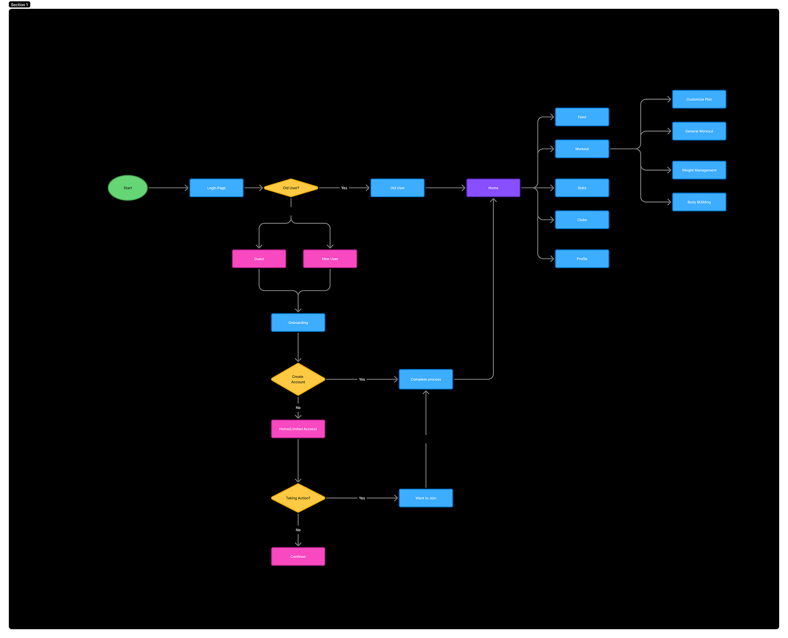
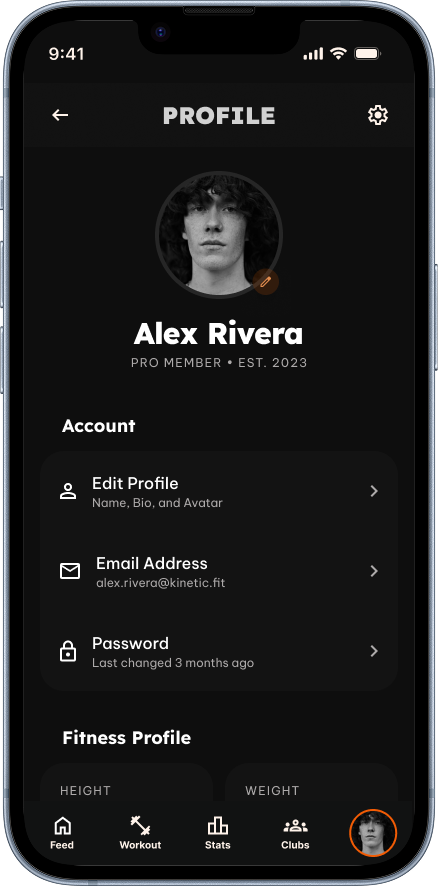

A fitness experience that combines personalized workouts, community accountability, and gamified streak mechanics to keep users consistent over the long term.
Over 70% of fitness app users abandon their workout routines within the first 21 days. Traditional fitness trackers focus purely on cold numerical tracking—counting reps, calculating caloric burn, and charting heart rates—while failing to address the fundamental psychological engine of long-term exercise: human accountability and social connection.
Interviews with gym-goers revealed that individuals who exercise alongside friends or accountability partners are 3.5x more likely to sustain consistent gym habits over six months. We mapped out user motivations and friction points using collaborative affinity mapping:

Goal: Wants to track progressive overload cleanly without wasting 5 minutes per workout fiddling with complex forms.
Frustration: Existing apps are isolated silos with zero social reinforcement when hitting a personal record.
Goal: Needs accountability buddies to stay motivated and avoid skipping gym sessions after long workdays.
Frustration: Workout tracking feels like homework; intimidations from generic fitness influencer feeds.
We designed Gymogram around shared team check-ins ("Crews"). If one member logs a workout, it powers up the squad’s shared milestone meter; if a member misses a workout, teammates can send playful "nudge" notifications that keep them accountable without shame.

We tested three distinct dashboard variations: a feed-first timeline, an exercise-card carousel, and a quick-log thumb pad. Testing revealed that users wanted to see their active crew status within the top 30% of the screen.


The visual language balances energetic high-contrast warm orange highlights with clean dark-mode typography, accessible 48px touch targets, and modular atomic components.


From social workout logging to community leaderboards and verified gym check-ins, every screen was refined for zero-friction one-handed gym usage.



Tested through moderated prototype sessions with 16 regular gym-goers and fitness beginners.
Projected 30-Day Retention
(Compared to industry average)
Weekly Workout Check-Ins
(Driven by squad streak nudges)
Average Workout Log Time
(Down from 3.5 minutes)
More UI/UX case studies and design system documentation.

Removing administrative friction from citizen reporting with 1-tap geotagged complaints.
View Case Study
Enterprise SaaS platform designed for staffing teams to track consultants and automate submissions.
View Case Study
On-demand laundry service design focusing on pricing transparency and live pickup tracking.
View Case Study